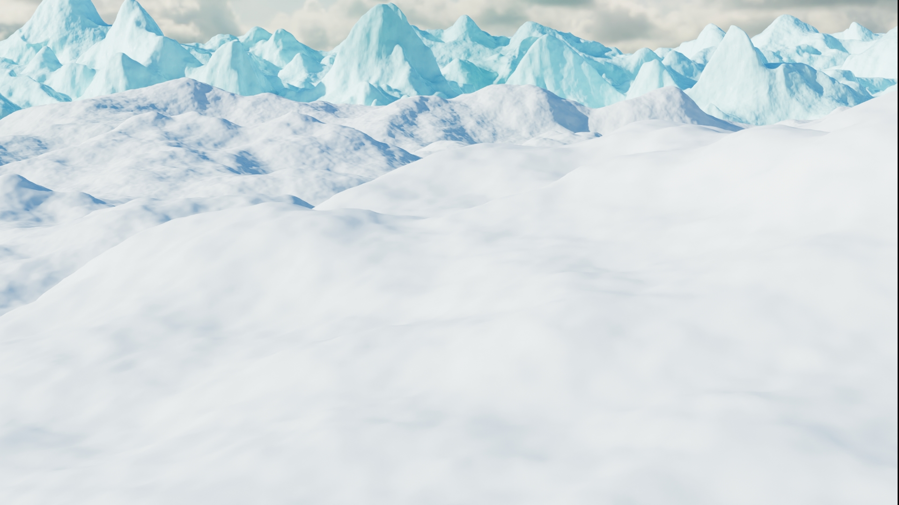
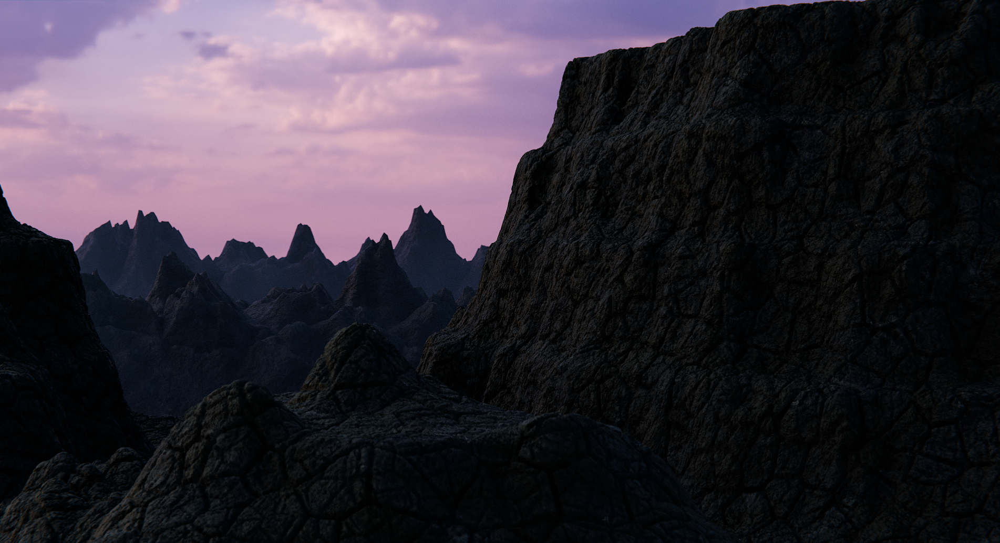

2 days ago
Frosty Desert: An Icy Adventure Awaits
Nestled amidst towering snow-capped peaks, the Frosty Desert is a breathtaking trekker's paradise. This unique landscape, a harmonious blend of icy expanses and rugged terrains, offers an unparalleled adventure for nature enthusiasts. The Frosty Desert, known for its crystal-clear air and serene environment, provides an otherworldly experience, making it a must-visit destination for those seeking solace and excitement in equal measure.
The journey through the Frosty Desert is as challenging as it is rewarding. Trekkers traverse through glistening glaciers, navigate steep climbs, and camp under a canopy of twinkling stars. Each step unveils stunning vistas, from frozen lakes to pristine white dunes, offering endless opportunities for awe-inspiring photography and unforgettable memories. Whether you are an experienced trekker or a novice adventurer, the Frosty Desert promises a thrilling escape into nature's icy embrace.

a month ago
Dark Sky Canyons: A Starry Trekking Dream
Dark Sky Canyons, a hidden gem for trekkers, is renowned for its mesmerizing night skies and dramatic landscapes. Located far from urban light pollution, this destination offers an unparalleled stargazing experience. As trekkers navigate through its winding paths and towering rock formations, they are treated to breathtaking views both day and night. The Dark Sky Canyons, with their deep hues and rugged beauty, create a sense of awe and wonder, making it a must-visit for adventure seekers and nature lovers alike.
The trek through Dark Sky Canyons is an unforgettable journey. By day, explorers traverse through narrow canyons and wide-open valleys, discovering hidden waterfalls and ancient rock art. As night falls, the sky transforms into a celestial spectacle, with countless stars illuminating the vast desert landscape. Camping under this stellar canopy, trekkers find a unique sense of peace and connection with the universe. Whether you are an avid astronomer or a passionate hiker, Dark Sky Canyons offer a magical blend of adventure and tranquility.
.jpg)
3 months ago
blog title goes here
The Shiganshina Mountains stand tall and proud, offering a majestic escape for trekking enthusiasts in Eldia. With their lush green valleys, towering peaks, and crystal-clear streams, these mountains provide a perfect blend of challenge and beauty. As trekkers venture through Shiganshina's diverse terrains, they are greeted by breathtaking vistas and an array of wildlife, making every step an adventure. The Shiganshina Mountains, with their serene and unspoiled landscapes, offer a retreat into nature's pristine embrace.
Our guides will take care of the titans and will try to spot and show many titans and if you are lucky you might also encounter the colossal titan!!